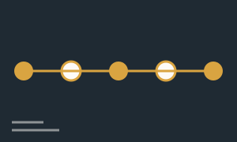
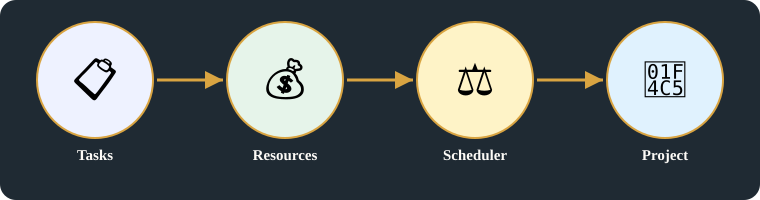
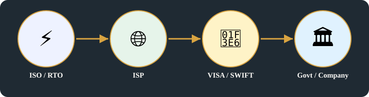

🧬 Systems Evolution · Card K · 11 of 11 · Batch 3, branch batch/b3publish
Project scheduler
Enhanced headline [Added, labelled, related only]: One scheduler model: tasks, resources, and who allocates them fairly
Original images +
Original headline(s) first (R15), exactly as written:
- Project scheduler
Original pages behind this card, untouched. On the public repo these images are NOT included — they are in the Vercel deploy only, as with Batches 1–2.

Detailed explanation

1. A scheduler is not a timetable
- A scheduler is an entity that takes tasks and resources and allocates those resources fairly and efficiently: Tasks + Resources ⇒ schedule project — a schedule depends on both inputs, labelled separately from the allocation arrow below.
- The same model, three times: electricity generators are scheduled by ISO, network packets are scheduled by ISPs for bandwidth, and business projects are scheduled by whoever owns that project — a government agency, a company, a bank network, a standards body, or a public-private consortium.
- Who schedules changes the fairness and the efficiency, because the scheduler owns the allocation — tasks = jobs, contracts, transactions; resource = money, labor, raw material, comput [cut off on the page].
2. Schedulers, distinguished (R14)
- ISO/RTO, ICANN, ISP, and VISA/SWIFT are not the same kind of scheduler: ISO/RTO schedule electricity, ICANN allocates names/numbers, ISPs schedule bandwidth, banks settle transactions. The page lists them together as 'who schedules'; the functions above keep them distinct.
- Who schedules, by domain: electricity — ISO / RTO (ISO) indepent / semi / public; networking — BGP + ISP route, ICANN, ISP (carrier); banks — (VISA, SWIFT) Private / central group banks; business projects — megaprojects by govt, corporate / ERP projects, semi (PPP / consortia); scheduler allocate resources — Govt agency / Company; Semi public: ICANN (semi), ISPs (private), N/W.
- Tasks + resources = electric flows, in the page's analogy: electricity = generators flows → ISO schedule → concern; networking = routers packets → ISP schedule bandwidth; schedule = [no value written after = on the page].
Summary:
- A scheduler allocates resources fairly and efficiently, it does not just list times.
- The same model holds for electricity, networking, and business projects — only the scheduler, and what it owns, changes.
- Schedulers are distinguished by function, not merged into one hierarchy: ISO/RTO, ICANN, ISP, and banks do different allocation work.

Key points
- Tasks + Resources ⇒ schedule project
- Tasks + resources = electric flows
- schedule = [no value written after = on the page]
- Govt projects [bracket, left]
- electricity = generators flows → ISO schedule → concern
- networking = routers packets → ISP schedule bandwidth
- Tasks = jobs, contracts, transactions
- resource = money, labor, raw material, comput [cut off]
- schedulers = entity → allocates these resources fairly / efficiently
- Who schedules / Scheduler owns — electricity – ISO / RTO (ISO) indepent / semi / public; BGP + ISP route, ICANN, ISP (carrier); (VISA, SWIFT) Private / central group banks; Scheduler allocate resources – Govt agency / Company; Semi public: ICANN (semi), ISPs (private), N/W; Business projects: megaprojects by govt, corporate / ERP projects, semi (PPP / consortia)
Horizontal links
- Allocation thread → Batch 1, Card B (RIR allocation, IP blocks) and Batch 2, Card G (ISO / RTO, ICANN, ISP as allocators).
- Business controller thread → Card J (usage, chargeback, licence, subscription, SaaS, API token — all allocation / payment models in scheduler terms).
- Govt projects thread → Batch 2, Card G (government networks, govt agencies deploying networks).
Related topics
Related cards in learning order, with their technical perspectives as lenses — not duplicate cards in domain boxes (R17).
- Batch 1, Card B — Naming, addressing and regulation
Systems evolution - Batch 2, Card G — Govt Layer (TO controll public
Systems evolution - Card J — Eras UI Frameworks + Hardware controlled / SW
Systems evolution · technical perspectives: software-engineering-development, hardware-computing, infrastructure-operations, industrial-business-networks